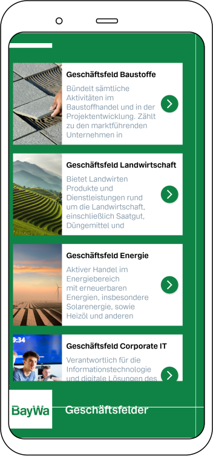
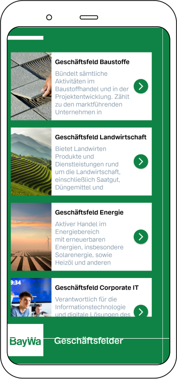

Downloaden Sie jetzt die BayWa Mobile App und entdecken Sie die Vielfalt unserer Kernsegmente
Verfügbar für Android
 


Verfügbar für Android
Bevor Sie berechtigt sind. APK-Dateien auf Ihrem Android Gerät zu installieren, müssen Sie einige Einstellungen anpassen.
Öffnen Sie dafür die Einstellungenauf Ihrem Gerät. Suchen Sie unter "Allgemein" nach dem Punkt "Sicherheit" und öffnen Sie ihn. Jetzt suchen Sie die Option "Unbekannte Herkunft" und aktivieren diese.
Nun können Sie Apps, die nicht aus dem PlayStore stammen installieren.
Tippen Sie auf "Download" um den Download zu starten. Möglicherweise werden Sie gefragt ob Sie die Datei herunterladen möchten. Bestätigen Sie dies.
Nach dem Herunterladen sollten Sie eine Benachrichtigung über den erfolgreichen Download erhalten. Tippen Sie auf diese Benachrichtigung. Alternativ findet man die heruntergeladene APK-Datei im "Dateimanager" oder in der "Downloads"-App.
Tippen Sie im Anschluss auf die heruntergeladene APK-Datei. Möglicherweise werden Sie gefragt, ob Sie die App installieren wollen. Bestätigen Sie dies.
Nach dem Abschluss der Installation ist die App bereit zum starten. Nun können Sie die App direkt öffnen oder über die App-Übersicht aufrufen.